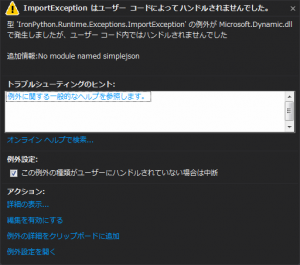
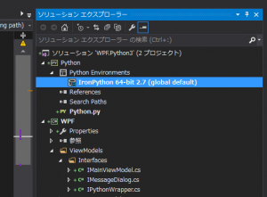
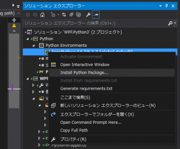
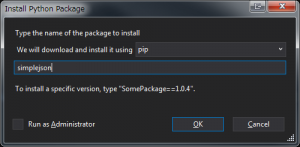
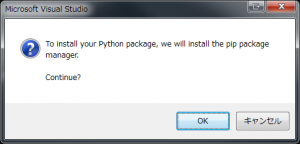
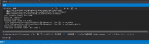

前回は配列を引数で渡し、戻りを配列で受け取る関数を呼び出してみました。
<style=”margin-top: 40px;”/>
Introduction
今回の目的は、パッケージを使います。 PythonもNuget、npm、apt-getよろしくパッケージ管理マネージャー pip が存在します。 英語版Wikiによれば、pipとは、再帰的頭字語で、Pip Installs Packages または Pip Installs Python とのこと。 昔あったLAMEとかと同じですね。古い。

IronPythonからPythonを呼ぶにしても、Python単独でできることは限られます。 画像処理とかグラフの描画など、豊富なパッケージを利用して、開発工数を削減できますし、高品質なアプリを構築できます。 しかしながら、Pythonを使うときは、普通 Python.exe からスクリプトを呼び出しますし、そこでパッケージのインストールを行います。 つまり、今実行している場所が基盤であることが意識できます。 対して、IronPython、つまり.NETで動作しているときは、このあたりが意識しづらいです。 バックエンドでPythonがごにょごにょしているのはわかるのですが、もやもやします。 なので、実際にパッケージを使って見ます。 使うパッケージは簡単で、simplejson を使います。 その名の通り、jsonファイルを扱います。 .NETは標準で.jsonを扱えるのでわざわざこれを使う必要性は薄いのですが… 軽量なパッケージでわかりやすいのがこれだったので… 今回のソースは下記になります

ただし、今回は最終的には
失敗
です。 忘備録として残してあります。
Python側
Pythonのソースは下記になります。 [code lang=”python”] import simplejson
class PythonTest(): def load(self, path): f = open(path, ‘r’) data = json.load(f) f.close() return data [/code] jsonのファイルパスを読み込んで、辞書データを返すだけです。 ここでは、パッケージの利用と、辞書形式クラスの扱いが肝になります。
C#側
WPFです。Xaml側は省略します。 jsonファイルから値を読み込むキーを指定するComboBox、結果を表示するためのメッセージボックスを呼び出すButtonだけです。 PythonWrapperのメソッドを呼び出すRelayCommandです。 [code lang=”csharp”] public RelayCommand MessageCommand { get { return this._MessageCommand ?? new RelayCommand(() => { var array = Enumerable.Range(this._Start, this._End - this._Start + 1).ToArray(); var sum = array.Sum(); var list = this._PythonWrapper.Twice(array);
var message = $”Initial total:{sum}, final total:{list.Sum()}”; this._MessageDialog.ShowMessage(message); }); } } [/code] PythonWrapperの中身です。 [code lang=”csharp”] using System; using System.Collections.Generic; using System.IO; using Microsoft.Scripting.Hosting; using WPFPython.ViewModels.Interfaces;
namespace WPFPython.ViewModels {
public sealed class PythonWrapper : IPythonWrapper {
#region フィールド
private readonly ScriptRuntime _ScriptRuntime;
private dynamic _PythonObject;
private dynamic _PythonTest;
private readonly string _Path;
#endregion
#region コンストラクタ
public PythonWrapper(ScriptRuntime scriptRuntime, string path) { if (scriptRuntime == null) throw new ArgumentNullException(nameof(scriptRuntime)); if (path == null) throw new ArgumentNullException(nameof(path));
if (!File.Exists(path)) throw new FileNotFoundException(path);
this._ScriptRuntime = scriptRuntime; this._Path = path; this._PythonObject = this._ScriptRuntime.UseFile(this._Path); this._PythonTest = this._PythonObject.PythonTest(); }
#endregion
#region メソッド
public Dictionary<string, object> load(string path) { return this._PythonTest.load(path); }
#endregion
}
} [/code] 引数に読み出したいjsonファイルのパスを渡すloadメソッドだけです。 戻りは Dicrionary<string, object> を返します。 Pythonが得意とする辞書をそのまま返すということです。
テスト (パッケージインストール前)
さて、ためしにこれを実行してみます。 simplejsonパッケージをインストールする前です。 通常のPythonなら No module named XXX というお馴染みのメッセージが出ます。 IronPythonだとどうなるでしょう。

Microsoft.Scripting.Hosting.ScriptRuntime.UseFile メソッドでpyファイルを渡した瞬間に例外を投げました。 IronPython.Runtime.Exceptions.ImportException がスローされるようです。
{kind=link}
テスト (パッケージインストール 失敗編)
Visual Studio からインストール
- パッケージをインストールします。 モジュールのインストールは、VisualStudioから実行できます。
 Python Environments から IronPythonを選択します。今回は 64bit 環境なので、IronPython 64bit 2.7 を右クリック。  Install Python Package… を選択します。  インストールするパッケージ名を入力して、OKを押下します。  OK  しかし失敗してしまいます。 ログを見ると、 [code] Installing ‘pip’ package manager. Restarting IronPython with -X:Frames Downloading pip from https://go.microsoft.com/fwlink/?LinkId=616663 Failed to install. Attempting direct download. Downloading setuptools from http://go.microsoft.com/fwlink/?LinkId=317603 Traceback (most recent call last) - [/code] とあります。 そもそも pip が入っていない様子。
{kind=link}
{kind=link}
{kind=link}
{kind=link}
{kind=link}
ensurepip
手動でpipの導入が必要らしいので、Pip in IronPython 2.7.5 に従って、pipをインストールします。 ipy.exe がある場所 (デフォルトは C:\Program Files (x86)\IronPython 2.7、以下 IronPythonディレクトリ) を管理者権限をつけたコマンドプロンプトで開きます。 そして下記コマンドを入力します。 [code lang=”batch”] C:\Program Files (x86)\IronPython 2.7>ipy.exe -X:Frames -m ensurepip Unhandled exception: Traceback (most recent call last): File “C:\Program Files (x86)\IronPython 2.7\Lib\runpy.py”, line 170, in run_module File “C:\Program Files (x86)\IronPython 2.7\Lib\runpy.py”, line 103, in _get_module_details ImportError: No module named ensurepip [/code] が、失敗します。 ensurepip が無いって言っています。
get-pip.py
ensurepipのインストールがダメでした。 次の施策として、上のメッセージにある、https://go.microsoft.com/fwlink/?LinkId=616663 にアクセスし、get-pip.py をダウンロードし、IronPythonディレクトリへコピーします。 管理者権限をつけたコマンドプロンプトで、IronPythonディレクトリを開き、下記コマンドを入力します。 [code lang=”batch”] C:\Program Files (x86)\IronPython 2.7>ipy.exe get-pip.py Traceback (most recent call last): File “get-pip.py”, line 20061, in
バージョンアップ
ここでふと気づきます。 システムに入っているIronPythonのバージョンが 2.7.4 でした。 上のensurepipに関するBlogは2.7.5に関する記事で、上の問題は2.7.4で発生していました。 ですので、古いバージョンを削除し、2.7.7を再度インストールします。 アップデートし終わって、再度ensurepipの導入を試みます。 [code lang=”batch”] C:\Program Files (x86)\IronPython 2.7>ipy.exe -X:Frames -m ensurepip Ignoring indexes: https://pypi.python.org/simple Collecting setuptools Collecting pip Installing collected packages: setuptools, pip Successfully installed pip-8.1.1 setuptools-20.10.1 [/code] 上手くいきました。 では、お待ちかねのsimplejsonをインストールします。 前の同じように、Visual Studioからインストールします。 [code lang=”batch”] Installing ‘simplejson’ Unhandled exception: Traceback (most recent call last): File “C:\Program Files (x86)\IronPython 2.7\Lib\runpy.py”, line 182, in run_module File “C:\Program Files (x86)\IronPython 2.7\Lib\runpy.py”, line 111, in _get_module_details File “C:\Program Files (x86)\IronPython 2.7\Lib\site-packages\pip\__init__.py”, line 13, in File “C:\Program Files (x86)\IronPython 2.7\Lib\site-packages\pip\exceptions.py”, line 6, in File “C:\Program Files (x86)\IronPython 2.7\Lib\site-packages\pip\_vendor\six.py”, line 701, in File “C:\Program Files (x86)\IronPython 2.7\Lib\site-packages\pip\_vendor\six.py”, line 692, in exec_ AttributeError: ‘module’ object has no attribute ‘_getframe’ ‘simplejson’ failed to install. Exit code: 1 [/code] またしても失敗です。 この _getframe という単語を足掛かりに検索してみます。 すると下記の記事が見つかりました。
しかし、結論から言うと、ここに書いてある方法もダメでした。
Conclusion
今回はまさかの失敗です。 モジュールがインストールできないなんて、Pythonを使う意味が全くありません。
Source Code
https://github.com/takuya-takeuchi/Demo/tree/master/WPF.Python3